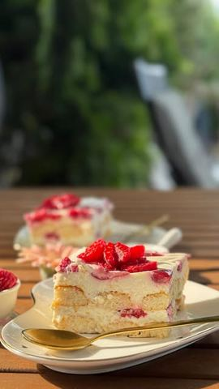

Sladoled kolač sa kokosom i malinama

Moja beleška
SačuvanoSvilenkasta tekstura, lagan kao oblak… dođe ti da se samo zapitaš — da li zaroniti kašikom u činiju ili se ipak potruditi i iseći parče? 😄
Sastojci
- Potrebni sastojci
Priprema
👩🍳 Priprema: 1. Umuti krem sir, slatku pavlaku, kondenzovano mleko, otopljenu belu čokoladu i aromu vanile u gladak krem. 2. Piškote umači kratko u mlako mleko, pa ih uvaljaj u kokos. 3. Ređaj polovinu piškota po dnu posude. 4. Preko piškota nanesi polovinu fila i polovinu svežih malina. 5. Ponovi isti redosled — piškote, fil, maline. 6. Na kraju, možeš po želji dodati par kašika džema od malina po vrhu. 🧊 Hlađenje: Stavi kolač prvo 1 sat u zamrzivač da se stegne, a zatim prebaci u frižider. Tekstura ostaje lagana, osvežavajuća, savršena za leto! Kako vam se čini? Koji ste tim? Zaronim kašiku direkt u posudu ili pak - uživam u parčencetu 🥰
Originalni opis sa Instagrama
Sladoled kolač sa kokosom i malinama 🍧🥥 Svilenkasta tekstura, lagan kao oblak… dođe ti da se samo zapitaš — da li zaroniti kašikom u činiju ili se ipak potruditi i iseći parče? 😄 📌 Potrebni sastojci: • 300 g krem sira • 200 ml slatke pavlake • 200 ml zaslađenog kondenzovanog mleka (polovina limenke) • 100 g bele čokolade (otopljene) • 1 kašičica arome vanile • 24 kom piškota (duplo pakovanje) • oko 150 g kokosa • oko 200 ml mleka (za umakanje piškota) • 250–300 g svežih malina • 2 pune kašike džema od malina (opciono) 👩🍳 Priprema: 1. Umuti krem sir, slatku pavlaku, kondenzovano mleko, otopljenu belu čokoladu i aromu vanile u gladak krem. 2. Piškote umači kratko u mlako mleko, pa ih uvaljaj u kokos. 3. Ređaj polovinu piškota po dnu posude. 4. Preko piškota nanesi polovinu fila i polovinu svežih malina. 5. Ponovi isti redosled — piškote, fil, maline. 6. Na kraju, možeš po želji dodati par kašika džema od malina po vrhu. 🧊 Hlađenje: Stavi kolač prvo 1 sat u zamrzivač da se stegne, a zatim prebaci u frižider. Tekstura ostaje lagana, osvežavajuća, savršena za leto! Kako vam se čini? Koji ste tim? Zaronim kašiku direkt u posudu ili pak - uživam u parčencetu 🥰 • • • #sladoledkolač #malineikokos #bezpečenja #brzidesert #ukusnahrana #recepti #brzoilako